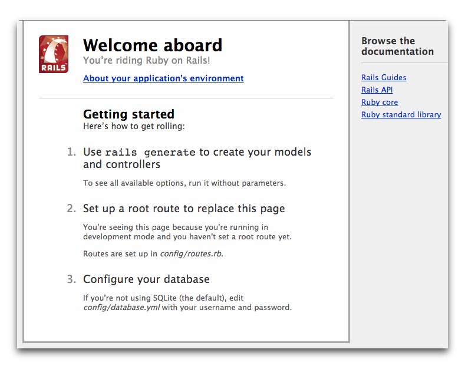
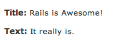

Getting Started with Rails
This guide covers getting up and running with Ruby on Rails.
After reading this guide, you will know:
- How to install Rails, create a new Rails application, and connect your application to a database.
- The general layout of a Rails application.
- The basic principles of MVC (Model, View, Controller) and RESTful design.
- How to quickly generate the starting pieces of a Rails application.
Guide Assumptions
This guide is designed for beginners who want to get started with a Rails application from scratch. It does not assume that you have any prior experience with Rails. However, to get the most out of it, you need to have some prerequisites installed:
- The Ruby language version 1.9.3 or newer.
- The RubyGems packaging system, which is installed with Ruby versions 1.9 and later. To learn more about RubyGems, please read the RubyGems Guides.
- A working installation of the SQLite3 Database.
Rails is a web application framework running on the Ruby programming language. If you have no prior experience with Ruby, you will find a very steep learning curve diving straight into Rails. There are several curated lists of online resources for learning Ruby:
Be aware that some resources, while still excellent, cover versions of Ruby as old as 1.6, and commonly 1.8, and will not include some syntax that you will see in day-to-day development with Rails.
What is Rails?
Rails is a web application development framework written in the Ruby language. It is designed to make programming web applications easier by making assumptions about what every developer needs to get started. It allows you to write less code while accomplishing more than many other languages and frameworks. Experienced Rails developers also report that it makes web application development more fun.
Rails is opinionated software. It makes the assumption that there is the "best" way to do things, and it's designed to encourage that way - and in some cases to discourage alternatives. If you learn "The Rails Way" you'll probably discover a tremendous increase in productivity. If you persist in bringing old habits from other languages to your Rails development, and trying to use patterns you learned elsewhere, you may have a less happy experience.
The Rails philosophy includes two major guiding principles:
- Don't Repeat Yourself: DRY is a principle of software development which states that "Every piece of knowledge must have a single, unambiguous, authoritative representation within a system." By not writing the same information over and over again, our code is more maintainable, more extensible, and less buggy.
- Convention Over Configuration: Rails has opinions about the best way to do many things in a web application, and defaults to this set of conventions, rather than require that you specify every minutiae through endless configuration files.
Creating a New Rails Project
The best way to use this guide is to follow each step as it happens, no code or step needed to make this example application has been left out, so you can literally follow along step by step.
By following along with this guide, you'll create a Rails project called
blog, a (very) simple weblog. Before you can start building the application,
you need to make sure that you have Rails itself installed.
TIP: The examples below use $ to represent your terminal prompt in a UNIX-like OS,
though it may have been customized to appear differently. If you are using Windows,
your prompt will look something like c:\source_code>
Installing Rails
Open up a command line prompt. On Mac OS X open Terminal.app, on Windows choose
"Run" from your Start menu and type 'cmd.exe'. Any commands prefaced with a
dollar sign $ should be run in the command line. Verify that you have a
current version of Ruby installed:
TIP: A number of tools exist to help you quickly install Ruby and Ruby on Rails on your system. Windows users can use Rails Installer, while Mac OS X users can use Tokaido.
$ ruby -v
ruby 2.0.0p353
If you don't have Ruby installed have a look at ruby-lang.org for possible ways to install Ruby on your platform.
Many popular UNIX-like OSes ship with an acceptable version of SQLite3. Windows users and others can find installation instructions at the SQLite3 website. Verify that it is correctly installed and in your PATH:
$ sqlite3 --version
The program should report its version.
To install Rails, use the gem install command provided by RubyGems:
$ gem install rails
To verify that you have everything installed correctly, you should be able to run the following:
$ rails --version
If it says something like "Rails 4.2.1", you are ready to continue.
Creating the Blog Application
Rails comes with a number of scripts called generators that are designed to make your development life easier by creating everything that's necessary to start working on a particular task. One of these is the new application generator, which will provide you with the foundation of a fresh Rails application so that you don't have to write it yourself.
To use this generator, open a terminal, navigate to a directory where you have rights to create files, and type:
$ rails new blog
This will create a Rails application called Blog in a blog directory and
install the gem dependencies that are already mentioned in Gemfile using
bundle install.
TIP: You can see all of the command line options that the Rails application
builder accepts by running rails new -h.
After you create the blog application, switch to its folder:
$ cd blog
The blog directory has a number of auto-generated files and folders that make
up the structure of a Rails application. Most of the work in this tutorial will
happen in the app folder, but here's a basic rundown on the function of each
of the files and folders that Rails created by default:
| File/Folder | Purpose |
|---|---|
| app/ | Contains the controllers, models, views, helpers, mailers and assets for your application. You'll focus on this folder for the remainder of this guide. |
| bin/ | Contains the rails script that starts your app and can contain other scripts you use to setup, deploy or run your application. |
| config/ | Configure your application's routes, database, and more. This is covered in more detail in Configuring Rails Applications. |
| config.ru | Rack configuration for Rack based servers used to start the application. |
| db/ | Contains your current database schema, as well as the database migrations. |
| Gemfile Gemfile.lock |
These files allow you to specify what gem dependencies are needed for your Rails application. These files are used by the Bundler gem. For more information about Bundler, see the Bundler website. |
| lib/ | Extended modules for your application. |
| log/ | Application log files. |
| public/ | The only folder seen by the world as-is. Contains static files and compiled assets. |
| Rakefile | This file locates and loads tasks that can be run from the command line. The task definitions are defined throughout the components of Rails. Rather than changing Rakefile, you should add your own tasks by adding files to the lib/tasks directory of your application. |
| README.rdoc | This is a brief instruction manual for your application. You should edit this file to tell others what your application does, how to set it up, and so on. |
| test/ | Unit tests, fixtures, and other test apparatus. These are covered in Testing Rails Applications. |
| tmp/ | Temporary files (like cache, pid, and session files). |
| vendor/ | A place for all third-party code. In a typical Rails application this includes vendored gems. |
Hello, Rails!
To begin with, let's get some text up on screen quickly. To do this, you need to get your Rails application server running.
Starting up the Web Server
You actually have a functional Rails application already. To see it, you need to
start a web server on your development machine. You can do this by running the
following in the blog directory:
$ bin/rails server
TIP: If you are using Windows, you have to pass the scripts under the bin
folder directly to the Ruby interpreter e.g. ruby bin\rails server.
TIP: Compiling CoffeeScript and JavaScript asset compression requires you
have a JavaScript runtime available on your system, in the absence
of a runtime you will see an execjs error during asset compilation.
Usually Mac OS X and Windows come with a JavaScript runtime installed.
Rails adds the therubyracer gem to the generated Gemfile in a
commented line for new apps and you can uncomment if you need it.
therubyrhino is the recommended runtime for JRuby users and is added by
default to the Gemfile in apps generated under JRuby. You can investigate
all the supported runtimes at ExecJS.
This will fire up WEBrick, a web server distributed with Ruby by default. To see your application in action, open a browser window and navigate to http://localhost:3000. You should see the Rails default information page:

TIP: To stop the web server, hit Ctrl+C in the terminal window where it's
running. To verify the server has stopped you should see your command prompt
cursor again. For most UNIX-like systems including Mac OS X this will be a
dollar sign $. In development mode, Rails does not generally require you to
restart the server; changes you make in files will be automatically picked up by
the server.
The "Welcome aboard" page is the smoke test for a new Rails application: it makes sure that you have your software configured correctly enough to serve a page. You can also click on the About your application's environment link to see a summary of your application's environment.
Say "Hello", Rails
To get Rails saying "Hello", you need to create at minimum a controller and a view.
A controller's purpose is to receive specific requests for the application. Routing decides which controller receives which requests. Often, there is more than one route to each controller, and different routes can be served by different actions. Each action's purpose is to collect information to provide it to a view.
A view's purpose is to display this information in a human readable format. An important distinction to make is that it is the controller, not the view, where information is collected. The view should just display that information. By default, view templates are written in a language called eRuby (Embedded Ruby) which is processed by the request cycle in Rails before being sent to the user.
To create a new controller, you will need to run the "controller" generator and tell it you want a controller called "welcome" with an action called "index", just like this:
$ bin/rails generate controller welcome index
Rails will create several files and a route for you.
create app/controllers/welcome_controller.rb
route get 'welcome/index'
invoke erb
create app/views/welcome
create app/views/welcome/index.html.erb
invoke test_unit
create test/controllers/welcome_controller_test.rb
invoke helper
create app/helpers/welcome_helper.rb
invoke assets
invoke coffee
create app/assets/javascripts/welcome.js.coffee
invoke scss
create app/assets/stylesheets/welcome.css.scss
Most important of these are of course the controller, located at
app/controllers/welcome_controller.rb and the view, located at
app/views/welcome/index.html.erb.
Open the app/views/welcome/index.html.erb file in your text editor. Delete all
of the existing code in the file, and replace it with the following single line
of code:
<h1>Hello, Rails!</h1>
Setting the Application Home Page
Now that we have made the controller and view, we need to tell Rails when we want "Hello, Rails!" to show up. In our case, we want it to show up when we navigate to the root URL of our site, http://localhost:3000. At the moment, "Welcome aboard" is occupying that spot.
Next, you have to tell Rails where your actual home page is located.
Open the file config/routes.rb in your editor.
Rails.application.routes.draw do
get 'welcome/index'
# The priority is based upon order of creation:
# first created -> highest priority.
#
# You can have the root of your site routed with "root"
# root 'welcome#index'
#
# ...
This is your application's routing file which holds entries in a special DSL
(domain-specific language) that tells Rails how to connect incoming requests to
controllers and actions. This file contains many sample routes on commented
lines, and one of them actually shows you how to connect the root of your site
to a specific controller and action. Find the line beginning with root and
uncomment it. It should look something like the following:
root 'welcome#index'
root 'welcome#index' tells Rails to map requests to the root of the
application to the welcome controller's index action and get 'welcome/index'
tells Rails to map requests to http://localhost:3000/welcome/index to the
welcome controller's index action. This was created earlier when you ran the
controller generator (bin/rails generate controller welcome index).
Launch the web server again if you stopped it to generate the controller (bin/rails
server) and navigate to http://localhost:3000 in your browser. You'll see the
"Hello, Rails!" message you put into app/views/welcome/index.html.erb,
indicating that this new route is indeed going to WelcomeController's index
action and is rendering the view correctly.
TIP: For more information about routing, refer to Rails Routing from the Outside In.
Getting Up and Running
Now that you've seen how to create a controller, an action and a view, let's create something with a bit more substance.
In the Blog application, you will now create a new resource. A resource is the term used for a collection of similar objects, such as articles, people or animals. You can create, read, update and destroy items for a resource and these operations are referred to as CRUD operations.
Rails provides a resources method which can be used to declare a standard REST
resource. You need to add the article resource to the
config/routes.rb as follows:
Rails.application.routes.draw do
resources :articles
root 'welcome#index'
end
If you run bin/rake routes, you'll see that it has defined routes for all the
standard RESTful actions. The meaning of the prefix column (and other columns)
will be seen later, but for now notice that Rails has inferred the
singular form article and makes meaningful use of the distinction.
$ bin/rake routes
Prefix Verb URI Pattern Controller#Action
articles GET /articles(.:format) articles#index
POST /articles(.:format) articles#create
new_article GET /articles/new(.:format) articles#new
edit_article GET /articles/:id/edit(.:format) articles#edit
article GET /articles/:id(.:format) articles#show
PATCH /articles/:id(.:format) articles#update
PUT /articles/:id(.:format) articles#update
DELETE /articles/:id(.:format) articles#destroy
root GET / welcome#index
In the next section, you will add the ability to create new articles in your application and be able to view them. This is the "C" and the "R" from CRUD: creation and reading. The form for doing this will look like this:

It will look a little basic for now, but that's ok. We'll look at improving the styling for it afterwards.
Laying down the ground work
Firstly, you need a place within the application to create a new article. A
great place for that would be at /articles/new. With the route already
defined, requests can now be made to /articles/new in the application.
Navigate to http://localhost:3000/articles/new and you'll see a routing
error:

This error occurs because the route needs to have a controller defined in order
to serve the request. The solution to this particular problem is simple: create
a controller called ArticlesController. You can do this by running this
command:
$ bin/rails generate controller articles
If you open up the newly generated app/controllers/articles_controller.rb
you'll see a fairly empty controller:
class ArticlesController < ApplicationController
end
A controller is simply a class that is defined to inherit from
ApplicationController.
It's inside this class that you'll define methods that will become the actions
for this controller. These actions will perform CRUD operations on the articles
within our system.
NOTE: There are public, private and protected methods in Ruby,
but only public methods can be actions for controllers.
For more details check out Programming Ruby.
If you refresh http://localhost:3000/articles/new now, you'll get a new error:

This error indicates that Rails cannot find the new action inside the
ArticlesController that you just generated. This is because when controllers
are generated in Rails they are empty by default, unless you tell it
your wanted actions during the generation process.
To manually define an action inside a controller, all you need to do is to
define a new method inside the controller. Open
app/controllers/articles_controller.rb and inside the ArticlesController
class, define a new method so that the controller now looks like this:
class ArticlesController < ApplicationController
def new
end
end
With the new method defined in ArticlesController, if you refresh
http://localhost:3000/articles/new you'll see another error:

You're getting this error now because Rails expects plain actions like this one to have views associated with them to display their information. With no view available, Rails errors out.
In the above image, the bottom line has been truncated. Let's see what the full thing looks like:
Missing template articles/new, application/new with
locale:[:en],. Searched in: * "/path/to/blog/app/views"
That's quite a lot of text! Let's quickly go through and understand what each part of it does.
The first part identifies what template is missing. In this case, it's the
articles/new template. Rails will first look for this template. If not found,
then it will attempt to load a template called application/new. It looks for
one here because the ArticlesController inherits from ApplicationController.
The next part of the message contains a hash. The :locale key in this hash
simply indicates what spoken language template should be retrieved. By default,
this is the English - or "en" - template. The next key, :formats specifies the
format of template to be served in response. The default format is :html, and
so Rails is looking for an HTML template. The final key, :handlers, is telling
us what template handlers could be used to render our template. :erb is most
commonly used for HTML templates, :builder is used for XML templates, and
:coffee uses CoffeeScript to build JavaScript templates.
The final part of this message tells us where Rails has looked for the templates. Templates within a basic Rails application like this are kept in a single location, but in more complex applications it could be many different paths.
The simplest template that would work in this case would be one located at
app/views/articles/new.html.erb. The extension of this file name is key: the
first extension is the format of the template, and the second extension is the
handler that will be used. Rails is attempting to find a template called
articles/new within app/views for the application. The format for this
template can only be html and the handler must be one of erb, builder or
coffee. Because you want to create a new HTML form, you will be using the ERB
language. Therefore the file should be called articles/new.html.erb and needs
to be located inside the app/views directory of the application.
Go ahead now and create a new file at app/views/articles/new.html.erb and
write this content in it:
<h1>New Article</h1>
When you refresh http://localhost:3000/articles/new you'll now see that the page has a title. The route, controller, action and view are now working harmoniously! It's time to create the form for a new article.
The first form
To create a form within this template, you will use a form
builder. The primary form builder for Rails is provided by a helper
method called form_for. To use this method, add this code into
app/views/articles/new.html.erb:
<%= form_for :article do |f| %>
<p>
<%= f.label :title %><br>
<%= f.text_field :title %>
</p>
<p>
<%= f.label :text %><br>
<%= f.text_area :text %>
</p>
<p>
<%= f.submit %>
</p>
<% end %>
If you refresh the page now, you'll see the exact same form as in the example. Building forms in Rails is really just that easy!
When you call form_for, you pass it an identifying object for this
form. In this case, it's the symbol :article. This tells the form_for
helper what this form is for. Inside the block for this method, the
FormBuilder object - represented by f - is used to build two labels and two
text fields, one each for the title and text of an article. Finally, a call to
submit on the f object will create a submit button for the form.
There's one problem with this form though. If you inspect the HTML that is
generated, by viewing the source of the page, you will see that the action
attribute for the form is pointing at /articles/new. This is a problem because
this route goes to the very page that you're on right at the moment, and that
route should only be used to display the form for a new article.
The form needs to use a different URL in order to go somewhere else.
This can be done quite simply with the :url option of form_for.
Typically in Rails, the action that is used for new form submissions
like this is called "create", and so the form should be pointed to that action.
Edit the form_for line inside app/views/articles/new.html.erb to look like
this:
<%= form_for :article, url: articles_path do |f| %>
In this example, the articles_path helper is passed to the :url option.
To see what Rails will do with this, we look back at the output of
bin/rake routes:
$ bin/rake routes
Prefix Verb URI Pattern Controller#Action
articles GET /articles(.:format) articles#index
POST /articles(.:format) articles#create
new_article GET /articles/new(.:format) articles#new
edit_article GET /articles/:id/edit(.:format) articles#edit
article GET /articles/:id(.:format) articles#show
PATCH /articles/:id(.:format) articles#update
PUT /articles/:id(.:format) articles#update
DELETE /articles/:id(.:format) articles#destroy
root GET / welcome#index
The articles_path helper tells Rails to point the form to the URI Pattern
associated with the articles prefix; and the form will (by default) send a
POST request to that route. This is associated with the create action of
the current controller, the ArticlesController.
With the form and its associated route defined, you will be able to fill in the form and then click the submit button to begin the process of creating a new article, so go ahead and do that. When you submit the form, you should see a familiar error:

You now need to create the create action within the ArticlesController for
this to work.
Creating articles
To make the "Unknown action" go away, you can define a create action within
the ArticlesController class in app/controllers/articles_controller.rb,
underneath the new action, as shown:
class ArticlesController < ApplicationController
def new
end
def create
end
end
If you re-submit the form now, you'll see another familiar error: a template is
missing. That's ok, we can ignore that for now. What the create action should
be doing is saving our new article to the database.
When a form is submitted, the fields of the form are sent to Rails as
parameters. These parameters can then be referenced inside the controller
actions, typically to perform a particular task. To see what these parameters
look like, change the create action to this:
def create
render plain: params[:article].inspect
end
The render method here is taking a very simple hash with a key of plain and
value of params[:article].inspect. The params method is the object which
represents the parameters (or fields) coming in from the form. The params
method returns an ActiveSupport::HashWithIndifferentAccess object, which
allows you to access the keys of the hash using either strings or symbols. In
this situation, the only parameters that matter are the ones from the form.
TIP: Ensure you have a firm grasp of the params method, as you'll use it fairly regularly. Let's consider an example URL: http://www.example.com/?username=dhh&email=dhh@email.com. In this URL, params[:username] would equal "dhh" and params[:email] would equal "dhh@email.com".
If you re-submit the form one more time you'll now no longer get the missing template error. Instead, you'll see something that looks like the following:
{"title"=>"First article!", "text"=>"This is my first article."}
This action is now displaying the parameters for the article that are coming in from the form. However, this isn't really all that helpful. Yes, you can see the parameters but nothing in particular is being done with them.
Creating the Article model
Models in Rails use a singular name, and their corresponding database tables use a plural name. Rails provides a generator for creating models, which most Rails developers tend to use when creating new models. To create the new model, run this command in your terminal:
$ bin/rails generate model Article title:string text:text
With that command we told Rails that we want a Article model, together
with a title attribute of type string, and a text attribute
of type text. Those attributes are automatically added to the articles
table in the database and mapped to the Article model.
Rails responded by creating a bunch of files. For now, we're only interested
in app/models/article.rb and db/migrate/20140120191729_create_articles.rb
(your name could be a bit different). The latter is responsible for creating
the database structure, which is what we'll look at next.
TIP: Active Record is smart enough to automatically map column names to model attributes, which means you don't have to declare attributes inside Rails models, as that will be done automatically by Active Record.
Running a Migration
As we've just seen, bin/rails generate model created a database migration file
inside the db/migrate directory. Migrations are Ruby classes that are
designed to make it simple to create and modify database tables. Rails uses
rake commands to run migrations, and it's possible to undo a migration after
it's been applied to your database. Migration filenames include a timestamp to
ensure that they're processed in the order that they were created.
If you look in the db/migrate/20140120191729_create_articles.rb file (remember,
yours will have a slightly different name), here's what you'll find:
class CreateArticles < ActiveRecord::Migration
def change
create_table :articles do |t|
t.string :title
t.text :text
t. null: false
end
end
end
The above migration creates a method named change which will be called when
you run this migration. The action defined in this method is also reversible,
which means Rails knows how to reverse the change made by this migration,
in case you want to reverse it later. When you run this migration it will create
an articles table with one string column and a text column. It also creates
two timestamp fields to allow Rails to track article creation and update times.
TIP: For more information about migrations, refer to Rails Database Migrations.
At this point, you can use a rake command to run the migration:
$ bin/rake db:migrate
Rails will execute this migration command and tell you it created the Articles table.
== CreateArticles: migrating ==================================================
-- create_table(:articles)
-> 0.0019s
== CreateArticles: migrated (0.0020s) =========================================
NOTE. Because you're working in the development environment by default, this
command will apply to the database defined in the development section of your
config/database.yml file. If you would like to execute migrations in another
environment, for instance in production, you must explicitly pass it when
invoking the command: bin/rake db:migrate RAILS_ENV=production.
Saving data in the controller
Back in ArticlesController, we need to change the create action
to use the new Article model to save the data in the database.
Open app/controllers/articles_controller.rb and change the create action to
look like this:
def create
@article = Article.new(params[:article])
@article.save
redirect_to @article
end
Here's what's going on: every Rails model can be initialized with its
respective attributes, which are automatically mapped to the respective
database columns. In the first line we do just that (remember that
params[:article] contains the attributes we're interested in). Then,
@article.save is responsible for saving the model in the database. Finally,
we redirect the user to the show action, which we'll define later.
TIP: You might be wondering why the A in Article.new is capitalized above, whereas most other references to articles in this guide have used lowercase. In this context, we are referring to the class named Article that is defined in \models\article.rb. Class names in Ruby must begin with a capital letter.
TIP: As we'll see later, @article.save returns a boolean indicating whether
the article was saved or not.
If you now go to http://localhost:3000/articles/new you'll almost be able to create an article. Try it! You should get an error that looks like this:

Rails has several security features that help you write secure applications, and you're running into one of them now. This one is called strong parameters, which requires us to tell Rails exactly which parameters are allowed into our controller actions.
Why do you have to bother? The ability to grab and automatically assign all controller parameters to your model in one shot makes the programmer's job easier, but this convenience also allows malicious use. What if a request to the server was crafted to look like a new article form submit but also included extra fields with values that violated your applications integrity? They would be 'mass assigned' into your model and then into the database along with the good stuff - potentially breaking your application or worse.
We have to whitelist our controller parameters to prevent wrongful mass
assignment. In this case, we want to both allow and require the title and
text parameters for valid use of create. The syntax for this introduces
require and permit. The change will involve one line in the create action:
@article = Article.new(params.require(:article).permit(:title, :text))
This is often factored out into its own method so it can be reused by multiple
actions in the same controller, for example create and update. Above and
beyond mass assignment issues, the method is often made private to make sure
it can't be called outside its intended context. Here is the result:
def create
@article = Article.new(article_params)
@article.save
redirect_to @article
end
private
def article_params
params.require(:article).permit(:title, :text)
end
TIP: For more information, refer to the reference above and this blog article about Strong Parameters.
Showing Articles
If you submit the form again now, Rails will complain about not finding the
show action. That's not very useful though, so let's add the show action
before proceeding.
As we have seen in the output of bin/rake routes, the route for show action is
as follows:
article GET /articles/:id(.:format) articles#show
The special syntax :id tells rails that this route expects an :id
parameter, which in our case will be the id of the article.
As we did before, we need to add the show action in
app/controllers/articles_controller.rb and its respective view.
NOTE: A frequent practice is to place the standard CRUD actions in each
controller in the following order: index, show, new, edit, create, update
and destroy. You may use any order you choose, but keep in mind that these
are public methods; as mentioned earlier in this guide, they must be placed
before any private or protected method in the controller in order to work.
Given that, let's add the show action, as follows:
class ArticlesController < ApplicationController
def show
@article = Article.find(params[:id])
end
def new
end
# snippet for brevity
A couple of things to note. We use Article.find to find the article we're
interested in, passing in params[:id] to get the :id parameter from the
request. We also use an instance variable (prefixed with @) to hold a
reference to the article object. We do this because Rails will pass all instance
variables to the view.
Now, create a new file app/views/articles/show.html.erb with the following
content:
<p>
<strong>Title:</strong>
<%= @article.title %>
</p>
<p>
<strong>Text:</strong>
<%= @article.text %>
</p>
With this change, you should finally be able to create new articles. Visit http://localhost:3000/articles/new and give it a try!

Listing all articles
We still need a way to list all our articles, so let's do that.
The route for this as per output of bin/rake routes is:
articles GET /articles(.:format) articles#index
Add the corresponding index action for that route inside the
ArticlesController in the app/controllers/articles_controller.rb file.
When we write an index action, the usual practice is to place it as the
first method in the controller. Let's do it:
class ArticlesController < ApplicationController
def index
@articles = Article.all
end
def show
@article = Article.find(params[:id])
end
def new
end
# snippet for brevity
And then finally, add the view for this action, located at
app/views/articles/index.html.erb:
<h1>Listing articles</h1>
<table>
<tr>
<th>Title</th>
<th>Text</th>
</tr>
<% @articles.each do |article| %>
<tr>
<td><%= article.title %></td>
<td><%= article.text %></td>
</tr>
<% end %>
</table>
Now if you go to http://localhost:3000/articles you will see a list of all the articles that you have created.
Adding links
You can now create, show, and list articles. Now let's add some links to navigate through pages.
Open app/views/welcome/index.html.erb and modify it as follows:
<h1>Hello, Rails!</h1>
<%= link_to 'My Blog', controller: 'articles' %>
The link_to method is one of Rails' built-in view helpers. It creates a
hyperlink based on text to display and where to go - in this case, to the path
for articles.
Let's add links to the other views as well, starting with adding this
"New Article" link to app/views/articles/index.html.erb, placing it above the
<table> tag:
<%= link_to 'New article', new_article_path %>
This link will allow you to bring up the form that lets you create a new article.
Now, add another link in app/views/articles/new.html.erb, underneath the
form, to go back to the index action:
<%= form_for :article, url: articles_path do |f| %>
...
<% end %>
<%= link_to 'Back', articles_path %>
Finally, add a link to the app/views/articles/show.html.erb template to
go back to the index action as well, so that people who are viewing a single
article can go back and view the whole list again:
<p>
<strong>Title:</strong>
<%= @article.title %>
</p>
<p>
<strong>Text:</strong>
<%= @article.text %>
</p>
<%= link_to 'Back', articles_path %>
TIP: If you want to link to an action in the same controller, you don't need to
specify the :controller option, as Rails will use the current controller by
default.
TIP: In development mode (which is what you're working in by default), Rails reloads your application with every browser request, so there's no need to stop and restart the web server when a change is made.
Adding Some Validation
The model file, app/models/article.rb is about as simple as it can get:
class Article < ActiveRecord::Base
end
There isn't much to this file - but note that the Article class inherits from
ActiveRecord::Base. Active Record supplies a great deal of functionality to
your Rails models for free, including basic database CRUD (Create, Read, Update,
Destroy) operations, data validation, as well as sophisticated search support
and the ability to relate multiple models to one another.
Rails includes methods to help you validate the data that you send to models.
Open the app/models/article.rb file and edit it:
class Article < ActiveRecord::Base
validates :title, presence: true,
length: { minimum: 5 }
end
These changes will ensure that all articles have a title that is at least five characters long. Rails can validate a variety of conditions in a model, including the presence or uniqueness of columns, their format, and the existence of associated objects. Validations are covered in detail in Active Record Validations.
With the validation now in place, when you call @article.save on an invalid
article, it will return false. If you open
app/controllers/articles_controller.rb again, you'll notice that we don't
check the result of calling @article.save inside the create action.
If @article.save fails in this situation, we need to show the form back to the
user. To do this, change the new and create actions inside
app/controllers/articles_controller.rb to these:
def new
@article = Article.new
end
def create
@article = Article.new(article_params)
if @article.save
redirect_to @article
else
render 'new'
end
end
private
def article_params
params.require(:article).permit(:title, :text)
end
The new action is now creating a new instance variable called @article, and
you'll see why that is in just a few moments.
Notice that inside the create action we use render instead of redirect_to
when save returns false. The render method is used so that the @article
object is passed back to the new template when it is rendered. This rendering
is done within the same request as the form submission, whereas the
redirect_to will tell the browser to issue another request.
If you reload
http://localhost:3000/articles/new and
try to save an article without a title, Rails will send you back to the
form, but that's not very useful. You need to tell the user that
something went wrong. To do that, you'll modify
app/views/articles/new.html.erb to check for error messages:
<%= form_for :article, url: articles_path do |f| %>
<% if @article.errors.any? %>
<div id="error_explanation">
<h2>
<%= pluralize(@article.errors.count, "error") %> prohibited
this article from being saved:
</h2>
<ul>
<% @article.errors.full_messages.each do |msg| %>
<li><%= msg %></li>
<% end %>
</ul>
</div>
<% end %>
<p>
<%= f.label :title %><br>
<%= f.text_field :title %>
</p>
<p>
<%= f.label :text %><br>
<%= f.text_area :text %>
</p>
<p>
<%= f.submit %>
</p>
<% end %>
<%= link_to 'Back', articles_path %>
A few things are going on. We check if there are any errors with
@article.errors.any?, and in that case we show a list of all
errors with @article.errors.full_messages.
pluralize is a rails helper that takes a number and a string as its
arguments. If the number is greater than one, the string will be automatically
pluralized.
The reason why we added @article = Article.new in the ArticlesController is
that otherwise @article would be nil in our view, and calling
@article.errors.any? would throw an error.
TIP: Rails automatically wraps fields that contain an error with a div
with class field_with_errors. You can define a css rule to make them
standout.
Now you'll get a nice error message when saving an article without title when you attempt to do just that on the new article form http://localhost:3000/articles/new:

Updating Articles
We've covered the "CR" part of CRUD. Now let's focus on the "U" part, updating articles.
The first step we'll take is adding an edit action to the ArticlesController,
generally between the new and create actions, as shown:
def new
@article = Article.new
end
def edit
@article = Article.find(params[:id])
end
def create
@article = Article.new(article_params)
if @article.save
redirect_to @article
else
render 'new'
end
end
The view will contain a form similar to the one we used when creating
new articles. Create a file called app/views/articles/edit.html.erb and make
it look as follows:
<h1>Editing article</h1>
<%= form_for :article, url: article_path(@article), method: :patch do |f| %>
<% if @article.errors.any? %>
<div id="error_explanation">
<h2>
<%= pluralize(@article.errors.count, "error") %> prohibited
this article from being saved:
</h2>
<ul>
<% @article.errors.full_messages.each do |msg| %>
<li><%= msg %></li>
<% end %>
</ul>
</div>
<% end %>
<p>
<%= f.label :title %><br>
<%= f.text_field :title %>
</p>
<p>
<%= f.label :text %><br>
<%= f.text_area :text %>
</p>
<p>
<%= f.submit %>
</p>
<% end %>
<%= link_to 'Back', articles_path %>
This time we point the form to the update action, which is not defined yet
but will be very soon.
The method: :patch option tells Rails that we want this form to be submitted
via the PATCH HTTP method which is the HTTP method you're expected to use to
update resources according to the REST protocol.
The first parameter of form_for can be an object, say, @article which would
cause the helper to fill in the form with the fields of the object. Passing in a
symbol (:article) with the same name as the instance variable (@article)
also automagically leads to the same behavior. This is what is happening here.
More details can be found in form_for documentation.
Next, we need to create the update action in
app/controllers/articles_controller.rb.
Add it between the create action and the private method:
def create
@article = Article.new(article_params)
if @article.save
redirect_to @article
else
render 'new'
end
end
def update
@article = Article.find(params[:id])
if @article.update(article_params)
redirect_to @article
else
render 'edit'
end
end
private
def article_params
params.require(:article).permit(:title, :text)
end
The new method, update, is used when you want to update a record
that already exists, and it accepts a hash containing the attributes
that you want to update. As before, if there was an error updating the
article we want to show the form back to the user.
We reuse the article_params method that we defined earlier for the create
action.
TIP: You don't need to pass all attributes to update. For
example, if you'd call @article.update(title: 'A new title')
Rails would only update the title attribute, leaving all other
attributes untouched.
Finally, we want to show a link to the edit action in the list of all the
articles, so let's add that now to app/views/articles/index.html.erb to make
it appear next to the "Show" link:
<table>
<tr>
<th>Title</th>
<th>Text</th>
<th colspan="2"></th>
</tr>
<% @articles.each do |article| %>
<tr>
<td><%= article.title %></td>
<td><%= article.text %></td>
<td><%= link_to 'Show', article_path(article) %></td>
<td><%= link_to 'Edit', edit_article_path(article) %></td>
</tr>
<% end %>
</table>
And we'll also add one to the app/views/articles/show.html.erb template as
well, so that there's also an "Edit" link on an article's page. Add this at the
bottom of the template:
...
<%= link_to 'Edit', edit_article_path(@article) %> |
<%= link_to 'Back', articles_path %>
And here's how our app looks so far:

Using partials to clean up duplication in views
Our edit page looks very similar to the new page; in fact, they
both share the same code for displaying the form. Let's remove this
duplication by using a view partial. By convention, partial files are
prefixed with an underscore.
TIP: You can read more about partials in the Layouts and Rendering in Rails guide.
Create a new file app/views/articles/_form.html.erb with the following
content:
<%= form_for @article do |f| %>
<% if @article.errors.any? %>
<div id="error_explanation">
<h2>
<%= pluralize(@article.errors.count, "error") %> prohibited
this article from being saved:
</h2>
<ul>
<% @article.errors.full_messages.each do |msg| %>
<li><%= msg %></li>
<% end %>
</ul>
</div>
<% end %>
<p>
<%= f.label :title %><br>
<%= f.text_field :title %>
</p>
<p>
<%= f.label :text %><br>
<%= f.text_area :text %>
</p>
<p>
<%= f.submit %>
</p>
<% end %>
Everything except for the form_for declaration remained the same.
The reason we can use this shorter, simpler form_for declaration
to stand in for either of the other forms is that @article is a resource
corresponding to a full set of RESTful routes, and Rails is able to infer
which URI and method to use.
For more information about this use of form_for, see Resource-oriented style.
Now, let's update the app/views/articles/new.html.erb view to use this new
partial, rewriting it completely:
<h1>New article</h1>
<%= render 'form' %>
<%= link_to 'Back', articles_path %>
Then do the same for the app/views/articles/edit.html.erb view:
<h1>Edit article</h1>
<%= render 'form' %>
<%= link_to 'Back', articles_path %>
Deleting Articles
We're now ready to cover the "D" part of CRUD, deleting articles from the
database. Following the REST convention, the route for
deleting articles as per output of bin/rake routes is:
DELETE /articles/:id(.:format) articles#destroy
The delete routing method should be used for routes that destroy
resources. If this was left as a typical get route, it could be possible for
people to craft malicious URLs like this:
<a href='http://example.com/articles/1/destroy'>look at this cat!</a>
We use the delete method for destroying resources, and this route is mapped
to the destroy action inside app/controllers/articles_controller.rb, which
doesn't exist yet. The destroy method is generally the last CRUD action in
the controller, and like the other public CRUD actions, it must be placed
before any private or protected methods. Let's add it:
def destroy
@article = Article.find(params[:id])
@article.destroy
redirect_to articles_path
end
The complete ArticlesController in the
app/controllers/articles_controller.rb file should now look like this:
class ArticlesController < ApplicationController
def index
@articles = Article.all
end
def show
@article = Article.find(params[:id])
end
def new
@article = Article.new
end
def edit
@article = Article.find(params[:id])
end
def create
@article = Article.new(article_params)
if @article.save
redirect_to @article
else
render 'new'
end
end
def update
@article = Article.find(params[:id])
if @article.update(article_params)
redirect_to @article
else
render 'edit'
end
end
def destroy
@article = Article.find(params[:id])
@article.destroy
redirect_to articles_path
end
private
def article_params
params.require(:article).permit(:title, :text)
end
end
You can call destroy on Active Record objects when you want to delete
them from the database. Note that we don't need to add a view for this
action since we're redirecting to the index action.
Finally, add a 'Destroy' link to your index action template
(app/views/articles/index.html.erb) to wrap everything together.
<h1>Listing Articles</h1>
<%= link_to 'New article', new_article_path %>
<table>
<tr>
<th>Title</th>
<th>Text</th>
<th colspan="3"></th>
</tr>
<% @articles.each do |article| %>
<tr>
<td><%= article.title %></td>
<td><%= article.text %></td>
<td><%= link_to 'Show', article_path(article) %></td>
<td><%= link_to 'Edit', edit_article_path(article) %></td>
<td><%= link_to 'Destroy', article_path(article),
method: :delete,
data: { confirm: 'Are you sure?' } %></td>
</tr>
<% end %>
</table>
Here we're using link_to in a different way. We pass the named route as the
second argument, and then the options as another argument. The :method and
:'data-confirm' options are used as HTML5 attributes so that when the link is
clicked, Rails will first show a confirm dialog to the user, and then submit the
link with method delete. This is done via the JavaScript file jquery_ujs
which is automatically included into your application's layout
(app/views/layouts/application.html.erb) when you generated the application.
Without this file, the confirmation dialog box wouldn't appear.

Congratulations, you can now create, show, list, update and destroy articles.
TIP: In general, Rails encourages using resources objects instead of declaring routes manually. For more information about routing, see Rails Routing from the Outside In.
Adding a Second Model
It's time to add a second model to the application. The second model will handle comments on articles.
Generating a Model
We're going to see the same generator that we used before when creating
the Article model. This time we'll create a Comment model to hold
reference of article comments. Run this command in your terminal:
$ bin/rails generate model Comment commenter:string body:text article:references
This command will generate four files:
| File | Purpose |
|---|---|
| db/migrate/20140120201010_create_comments.rb | Migration to create the comments table in your database (your name will include a different timestamp) |
| app/models/comment.rb | The Comment model |
| test/models/comment_test.rb | Testing harness for the comments model |
| test/fixtures/comments.yml | Sample comments for use in testing |
First, take a look at app/models/comment.rb:
class Comment < ActiveRecord::Base
belongs_to :article
end
This is very similar to the Article model that you saw earlier. The difference
is the line belongs_to :article, which sets up an Active Record association.
You'll learn a little about associations in the next section of this guide.
In addition to the model, Rails has also made a migration to create the corresponding database table:
class CreateComments < ActiveRecord::Migration
def change
create_table :comments do |t|
t.string :commenter
t.text :body
t.references :article, index: true, foreign_key: true
t. null: false
end
end
end
The t.references line creates an integer column called article_id, an index
for it, and a foreign key constraint that points to the articles table. Go
ahead and run the migration:
$ bin/rake db:migrate
Rails is smart enough to only execute the migrations that have not already been run against the current database, so in this case you will just see:
== CreateComments: migrating =================================================
-- create_table(:comments)
-> 0.0115s
== CreateComments: migrated (0.0119s) ========================================
Associating Models
Active Record associations let you easily declare the relationship between two models. In the case of comments and articles, you could write out the relationships this way:
- Each comment belongs to one article.
- One article can have many comments.
In fact, this is very close to the syntax that Rails uses to declare this
association. You've already seen the line of code inside the Comment model
(app/models/comment.rb) that makes each comment belong to an Article:
class Comment < ActiveRecord::Base
belongs_to :article
end
You'll need to edit app/models/article.rb to add the other side of the
association:
class Article < ActiveRecord::Base
has_many :comments
validates :title, presence: true,
length: { minimum: 5 }
end
These two declarations enable a good bit of automatic behavior. For example, if
you have an instance variable @article containing an article, you can retrieve
all the comments belonging to that article as an array using
@article.comments.
TIP: For more information on Active Record associations, see the Active Record Associations guide.
Adding a Route for Comments
As with the welcome controller, we will need to add a route so that Rails
knows where we would like to navigate to see comments. Open up the
config/routes.rb file again, and edit it as follows:
resources :articles do
resources :comments
end
This creates comments as a nested resource within articles. This is
another part of capturing the hierarchical relationship that exists between
articles and comments.
TIP: For more information on routing, see the Rails Routing guide.
Generating a Controller
With the model in hand, you can turn your attention to creating a matching controller. Again, we'll use the same generator we used before:
$ bin/rails generate controller Comments
This creates five files and one empty directory:
| File/Directory | Purpose |
|---|---|
| app/controllers/comments_controller.rb | The Comments controller |
| app/views/comments/ | Views of the controller are stored here |
| test/controllers/comments_controller_test.rb | The test for the controller |
| app/helpers/comments_helper.rb | A view helper file |
| app/assets/javascripts/comment.js.coffee | CoffeeScript for the controller |
| app/assets/stylesheets/comment.css.scss | Cascading style sheet for the controller |
Like with any blog, our readers will create their comments directly after
reading the article, and once they have added their comment, will be sent back
to the article show page to see their comment now listed. Due to this, our
CommentsController is there to provide a method to create comments and delete
spam comments when they arrive.
So first, we'll wire up the Article show template
(app/views/articles/show.html.erb) to let us make a new comment:
<p>
<strong>Title:</strong>
<%= @article.title %>
</p>
<p>
<strong>Text:</strong>
<%= @article.text %>
</p>
<h2>Add a comment:</h2>
<%= form_for([@article, @article.comments.build]) do |f| %>
<p>
<%= f.label :commenter %><br>
<%= f.text_field :commenter %>
</p>
<p>
<%= f.label :body %><br>
<%= f.text_area :body %>
</p>
<p>
<%= f.submit %>
</p>
<% end %>
<%= link_to 'Edit', edit_article_path(@article) %> |
<%= link_to 'Back', articles_path %>
This adds a form on the Article show page that creates a new comment by
calling the CommentsController create action. The form_for call here uses
an array, which will build a nested route, such as /articles/1/comments.
Let's wire up the create in app/controllers/comments_controller.rb:
class CommentsController < ApplicationController
def create
@article = Article.find(params[:article_id])
@comment = @article.comments.create(comment_params)
redirect_to article_path(@article)
end
private
def comment_params
params.require(:comment).permit(:commenter, :body)
end
end
You'll see a bit more complexity here than you did in the controller for
articles. That's a side-effect of the nesting that you've set up. Each request
for a comment has to keep track of the article to which the comment is attached,
thus the initial call to the find method of the Article model to get the
article in question.
In addition, the code takes advantage of some of the methods available for an
association. We use the create method on @article.comments to create and
save the comment. This will automatically link the comment so that it belongs to
that particular article.
Once we have made the new comment, we send the user back to the original article
using the article_path(@article) helper. As we have already seen, this calls
the show action of the ArticlesController which in turn renders the
show.html.erb template. This is where we want the comment to show, so let's
add that to the app/views/articles/show.html.erb.
<p>
<strong>Title:</strong>
<%= @article.title %>
</p>
<p>
<strong>Text:</strong>
<%= @article.text %>
</p>
<h2>Comments</h2>
<% @article.comments.each do |comment| %>
<p>
<strong>Commenter:</strong>
<%= comment.commenter %>
</p>
<p>
<strong>Comment:</strong>
<%= comment.body %>
</p>
<% end %>
<h2>Add a comment:</h2>
<%= form_for([@article, @article.comments.build]) do |f| %>
<p>
<%= f.label :commenter %><br>
<%= f.text_field :commenter %>
</p>
<p>
<%= f.label :body %><br>
<%= f.text_area :body %>
</p>
<p>
<%= f.submit %>
</p>
<% end %>
<%= link_to 'Edit', edit_article_path(@article) %> |
<%= link_to 'Back', articles_path %>
Now you can add articles and comments to your blog and have them show up in the right places.

Refactoring
Now that we have articles and comments working, take a look at the
app/views/articles/show.html.erb template. It is getting long and awkward. We
can use partials to clean it up.
Rendering Partial Collections
First, we will make a comment partial to extract showing all the comments for
the article. Create the file app/views/comments/_comment.html.erb and put the
following into it:
<p>
<strong>Commenter:</strong>
<%= comment.commenter %>
</p>
<p>
<strong>Comment:</strong>
<%= comment.body %>
</p>
Then you can change app/views/articles/show.html.erb to look like the
following:
<p>
<strong>Title:</strong>
<%= @article.title %>
</p>
<p>
<strong>Text:</strong>
<%= @article.text %>
</p>
<h2>Comments</h2>
<%= render @article.comments %>
<h2>Add a comment:</h2>
<%= form_for([@article, @article.comments.build]) do |f| %>
<p>
<%= f.label :commenter %><br>
<%= f.text_field :commenter %>
</p>
<p>
<%= f.label :body %><br>
<%= f.text_area :body %>
</p>
<p>
<%= f.submit %>
</p>
<% end %>
<%= link_to 'Edit', edit_article_path(@article) %> |
<%= link_to 'Back', articles_path %>
This will now render the partial in app/views/comments/_comment.html.erb once
for each comment that is in the @article.comments collection. As the render
method iterates over the @article.comments collection, it assigns each
comment to a local variable named the same as the partial, in this case
comment which is then available in the partial for us to show.
Rendering a Partial Form
Let us also move that new comment section out to its own partial. Again, you
create a file app/views/comments/_form.html.erb containing:
<%= form_for([@article, @article.comments.build]) do |f| %>
<p>
<%= f.label :commenter %><br>
<%= f.text_field :commenter %>
</p>
<p>
<%= f.label :body %><br>
<%= f.text_area :body %>
</p>
<p>
<%= f.submit %>
</p>
<% end %>
Then you make the app/views/articles/show.html.erb look like the following:
<p>
<strong>Title:</strong>
<%= @article.title %>
</p>
<p>
<strong>Text:</strong>
<%= @article.text %>
</p>
<h2>Comments</h2>
<%= render @article.comments %>
<h2>Add a comment:</h2>
<%= render 'comments/form' %>
<%= link_to 'Edit', edit_article_path(@article) %> |
<%= link_to 'Back', articles_path %>
The second render just defines the partial template we want to render,
comments/form. Rails is smart enough to spot the forward slash in that
string and realize that you want to render the _form.html.erb file in
the app/views/comments directory.
The @article object is available to any partials rendered in the view because
we defined it as an instance variable.
Deleting Comments
Another important feature of a blog is being able to delete spam comments. To do
this, we need to implement a link of some sort in the view and a destroy
action in the CommentsController.
So first, let's add the delete link in the
app/views/comments/_comment.html.erb partial:
<p>
<strong>Commenter:</strong>
<%= comment.commenter %>
</p>
<p>
<strong>Comment:</strong>
<%= comment.body %>
</p>
<p>
<%= link_to 'Destroy Comment', [comment.article, comment],
method: :delete,
data: { confirm: 'Are you sure?' } %>
</p>
Clicking this new "Destroy Comment" link will fire off a DELETE
/articles/:article_id/comments/:id to our CommentsController, which can then
use this to find the comment we want to delete, so let's add a destroy action
to our controller (app/controllers/comments_controller.rb):
class CommentsController < ApplicationController
def create
@article = Article.find(params[:article_id])
@comment = @article.comments.create(comment_params)
redirect_to article_path(@article)
end
def destroy
@article = Article.find(params[:article_id])
@comment = @article.comments.find(params[:id])
@comment.destroy
redirect_to article_path(@article)
end
private
def comment_params
params.require(:comment).permit(:commenter, :body)
end
end
The destroy action will find the article we are looking at, locate the comment
within the @article.comments collection, and then remove it from the
database and send us back to the show action for the article.
Deleting Associated Objects
If you delete an article, its associated comments will also need to be
deleted, otherwise they would simply occupy space in the database. Rails allows
you to use the dependent option of an association to achieve this. Modify the
Article model, app/models/article.rb, as follows:
class Article < ActiveRecord::Base
has_many :comments, dependent: :destroy
validates :title, presence: true,
length: { minimum: 5 }
end
Security
Basic Authentication
If you were to publish your blog online, anyone would be able to add, edit and delete articles or delete comments.
Rails provides a very simple HTTP authentication system that will work nicely in this situation.
In the ArticlesController we need to have a way to block access to the
various actions if the person is not authenticated. Here we can use the Rails
http_basic_authenticate_with method, which allows access to the requested
action if that method allows it.
To use the authentication system, we specify it at the top of our
ArticlesController in app/controllers/articles_controller.rb. In our case,
we want the user to be authenticated on every action except index and show,
so we write that:
class ArticlesController < ApplicationController
http_basic_authenticate_with name: "dhh", password: "secret", except: [:index, :show]
def index
@articles = Article.all
end
# snippet for brevity
We also want to allow only authenticated users to delete comments, so in the
CommentsController (app/controllers/comments_controller.rb) we write:
class CommentsController < ApplicationController
http_basic_authenticate_with name: "dhh", password: "secret", only: :destroy
def create
@article = Article.find(params[:article_id])
# ...
end
# snippet for brevity
Now if you try to create a new article, you will be greeted with a basic HTTP Authentication challenge:

Other authentication methods are available for Rails applications. Two popular authentication add-ons for Rails are the Devise rails engine and the Authlogic gem, along with a number of others.
Other Security Considerations
Security, especially in web applications, is a broad and detailed area. Security in your Rails application is covered in more depth in the Ruby on Rails Security Guide.
What's Next?
Now that you've seen your first Rails application, you should feel free to update it and experiment on your own. But you don't have to do everything without help. As you need assistance getting up and running with Rails, feel free to consult these support resources:
- The Ruby on Rails Guides
- The Ruby on Rails Tutorial
- The Ruby on Rails mailing list
- The #rubyonrails channel on irc.freenode.net
Rails also comes with built-in help that you can generate using the rake command-line utility:
- Running
rake doc:guideswill put a full copy of the Rails Guides in thedoc/guidesfolder of your application. Opendoc/guides/index.htmlin your web browser to explore the Guides. - Running
rake doc:railswill put a full copy of the API documentation for Rails in thedoc/apifolder of your application. Opendoc/api/index.htmlin your web browser to explore the API documentation.
TIP: To be able to generate the Rails Guides locally with the doc:guides rake
task you need to install the RedCloth and Nokogiri gems. Add it to your Gemfile and run
bundle install and you're ready to go.
Configuration Gotchas
The easiest way to work with Rails is to store all external data as UTF-8. If you don't, Ruby libraries and Rails will often be able to convert your native data into UTF-8, but this doesn't always work reliably, so you're better off ensuring that all external data is UTF-8.
If you have made a mistake in this area, the most common symptom is a black diamond with a question mark inside appearing in the browser. Another common symptom is characters like "" appearing instead of "". Rails takes a number of internal steps to mitigate common causes of these problems that can be automatically detected and corrected. However, if you have external data that is not stored as UTF-8, it can occasionally result in these kinds of issues that cannot be automatically detected by Rails and corrected.
Two very common sources of data that are not UTF-8:
- Your text editor: Most text editors (such as TextMate), default to saving files as UTF-8. If your text editor does not, this can result in special characters that you enter in your templates (such as ) to appear as a diamond with a question mark inside in the browser. This also applies to your i18n translation files. Most editors that do not already default to UTF-8 (such as some versions of Dreamweaver) offer a way to change the default to UTF-8. Do so.
- Your database: Rails defaults to converting data from your database into UTF-8 at the boundary. However, if your database is not using UTF-8 internally, it may not be able to store all characters that your users enter. For instance, if your database is using Latin-1 internally, and your user enters a Russian, Hebrew, or Japanese character, the data will be lost forever once it enters the database. If possible, use UTF-8 as the internal storage of your database.